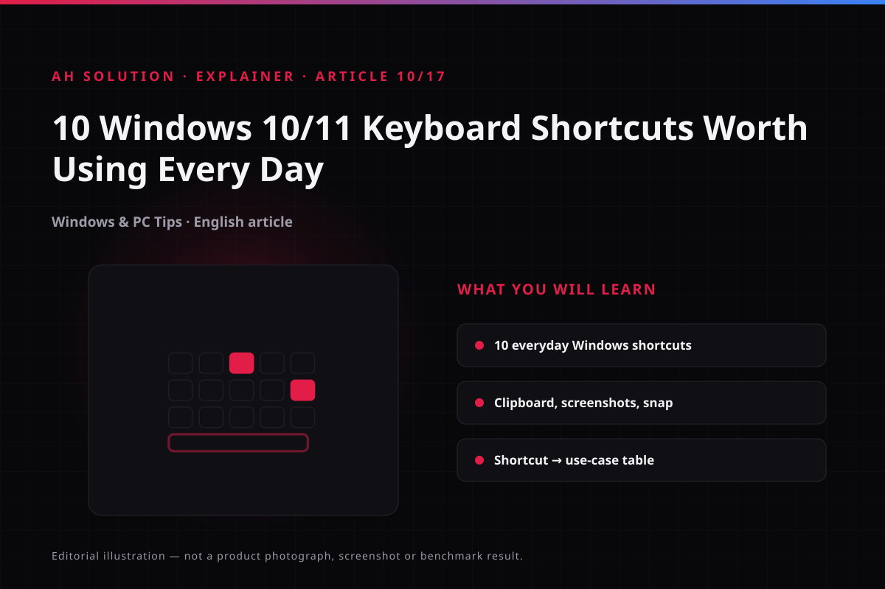

Reaching for the mouse for something the keyboard can do in a fraction of a second is the most common avoidable delay in a Windows workflow. Every click that needs you to lift your hand and aim at a small target is one you could have skipped.
The original AH Solution video, published in March 2021, is a short tour of the shortcuts that replace the most common mouse work. That format suits the subject: a shortcut only earns its place once you have seen it, so the video shows the combinations, not the theory.
This article turns that list into a reference you can keep on screen: what each combination does, when it is worth using, and the version details that decide whether it works on your machine. Because the video dates from 2021, version differences are covered openly.
Original video: 10 Amazing Windows 10/11 Keyboard Shortcuts You Must Know! 💻🔥 Video published: 15 March 2021 · Duration: 03:44
Navigation and quick access shortcuts
These are the ones you will reach for most often: they open what you need without hunting through the taskbar or the Start menu. Microsoft's complete keyboard shortcuts list for Windows 10 and 11 is where to cross-check anything new.

| Shortcut | What it does | When to use it |
|---|---|---|
| Win + E | Opens File Explorer | Finding or opening files |
| Win + I | Opens the Settings window | Changing Wi-Fi, display or system settings |
| Win + D | Shows or hides the desktop | Clearing the screen of open windows |
| Win + L | Locks the PC | Stepping away from it for a moment |
| Alt + Tab | Switches between open apps | Jumping from one app to another instantly |
Screenshot and clipboard shortcuts
Taking a screenshot and moving text around are everyday tasks, and Windows has shortcuts for both.
| Shortcut | What it does | When to use it |
|---|---|---|
| Win + Shift + S | Opens the Snipping Tool / Snip & Sketch capture view | Capturing part of the screen: region, window or full screen |
| Win + V | Opens clipboard history | Pasting text or an image copied earlier |
| Ctrl + C / Ctrl + X | Copy / Cut | Copying or cutting text and files |
| Ctrl + V | Paste | Pasting copied content |
Version and hardware notes:
Win + Vclipboard history is available on Windows 10 from the October 2018 update onwards, and on Windows 11. If it does nothing, check it is switched on in Settings > System > Clipboard.Win + Shift + Sin its modern Snipping Tool form needs recent Windows 10 builds or Windows 11. Microsoft's Snipping Tool guide lists the shortcuts and capture modes. On older systems the classic PrintScreen still works.
Window management and multitasking
Window management shortcuts decide whether the desktop stays tidy when several windows are open. Windows 11 adds snap layouts on top, but the combinations below work in both versions. Virtual desktops are the same family: one for work, another for personal browsing.
| Shortcut | What it does | When to use it |
|---|---|---|
| Win + ← / → | Snaps the active window left or right | Comparing two windows side by side |
| Win + ↑ / ↓ | Maximises, minimises or restores the window | Managing screen space |
| Win + Tab | Opens Task View (all windows plus virtual desktops) | Seeing everything that is open |
| Win + P | Toggles the project mode (screen output) | Connecting a laptop to an external display |
| Win + Ctrl + D | Creates a new virtual desktop | Keeping work and personal tabs separate |
| Win + Ctrl + ← / → | Switches between virtual desktops | Moving from one desktop to another |
| Win + Ctrl + F4 | Closes the current virtual desktop | Clearing away a temporary desktop |
Productivity and system shortcuts
These are less commonly memorised, but once they are in your fingers you will use them often.
| Shortcut | What it does | When to use it |
|---|---|---|
| Ctrl + Shift + Esc | Opens Task Manager directly | An app hangs, or you need to check CPU and RAM usage |
| Win + . (dot) | Opens the emoji panel | Inserting an emoji in a chat or document |
| Win + , (comma) | Peeks at the desktop temporarily | Checking files without minimising everything |
| Win + R | Opens the Run dialog | Launching apps or commands immediately |
| Alt + F4 | Closes the current window or app | Dismissing an app quickly |
Text editing shortcuts
Editing is where mouse-free work pays off most: text can be selected and corrected without leaving the arrow keys, which is why these combinations matter to writers.
| Shortcut | What it does | When to use it |
|---|---|---|
| Ctrl + Shift + ← / → | Selects word by word | Highlighting a long passage quickly |
| Ctrl + Home / End | Jumps to the start or end of a document | Reaching the top or bottom of a long file |
| Ctrl + Z / Ctrl + Y | Undo / Redo | Reversing a mistake, or bringing it back |
How to make these shortcuts stick
Trying to memorise everything at once is the fastest way to remember nothing. Start with three or four you would use anyway, such as Win + E, Alt + Tab and Win + Shift + S, and let those become automatic before adding more.
Use them deliberately in daily work. The first attempts feel slower than reaching for the mouse, but regular use builds the habit within a week or two. Keyboard layouts and Windows versions can change how a combination behaves, so check the layout and the version notes if one does nothing. Our tutorials.html page has more Windows tips.
Troubleshooting and limitations
- A shortcut does nothing: check the active keyboard layout, since a Hindi/English layout changes which key produces a character. On some laptops the Fn lock also matters.
Win + Vdoes not open: enable Clipboard history under Settings > System > Clipboard. It is a Windows 10 and Windows 11 feature and will not exist on older builds.- Application-specific overrides: some applications define their own shortcuts and take precedence; then read the app's own list.
Safety and privacy
- Clipboard history: on a shared PC, clear or disable it. Be careful with sensitive items such as passwords or OTPs, which a saved history keeps available.
- Locking the screen: use
Win + Levery time you leave. Small habit, large effect. - Task Manager access:
Ctrl + Shift + Escopens it directly, but think before ending unknown processes.
Frequently asked questions
Do these shortcuts work in both Windows 10 and Windows 11?
Yes, most are identical. Modern combinations such as Win + V and Win + Shift + S work on both, though the interface around them may differ slightly.
Which shortcut should I learn first?
Alt + Tab and Win + D are the most immediately practical. Start there.
What should I do if Win + V clipboard history does not work?
Open Settings > System > Clipboard and turn on "Clipboard history". If the option is not shown at all, check for a pending Windows update.
Do shortcuts slow the PC down?
No. Shortcuts are handled at the operating system level, so they make work faster.
Can I customise these shortcuts?
Yes. Microsoft's free PowerToys Keyboard Manager can remap keys, for example turning Caps Lock into Ctrl. Most default shortcuts are fixed.
Does the Fn key cause problems on laptops?
On some laptops combinations are triggered as Fn + key. Check the Fn lock setting in the BIOS or the keyboard settings.
Final recommendations
The most effective way to learn shortcuts is to use them. Introduce two or three new combinations into your workflow each week, and within a month you will rely on the mouse far less.
AH Solution's own recommendation is to master these five first: Win + E, Alt + Tab, Win + D, Win + L and Win + Shift + S. In the original draft they were estimated to cover roughly 80% of routine mouse clicks in a working day.
Consistency matters more than perfection. A few minutes of practice each day is enough, and our blog.html page has more productivity tips.
Resources and official links
- Microsoft - Windows keyboard shortcuts (full list) - every built-in shortcut on one official page.
- Microsoft - taking screenshots with the Snipping Tool - the official guide to
Win + Shift + S. - Microsoft Learn - PowerToys Keyboard Manager - the official way to remap keys.